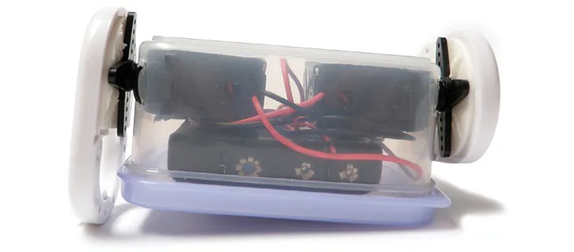
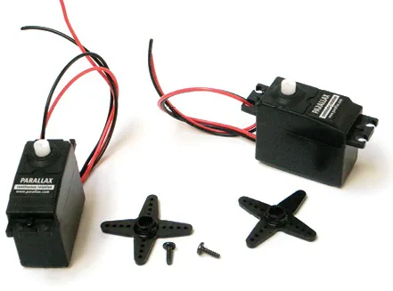
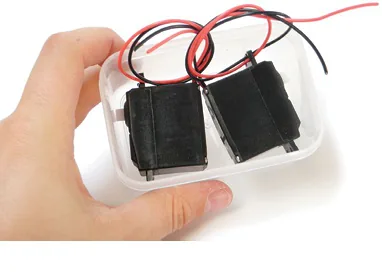
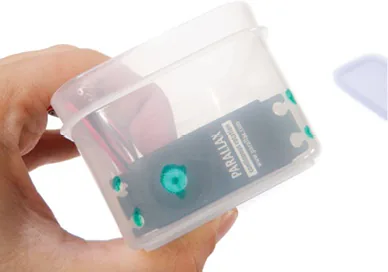
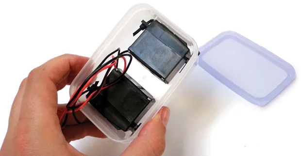
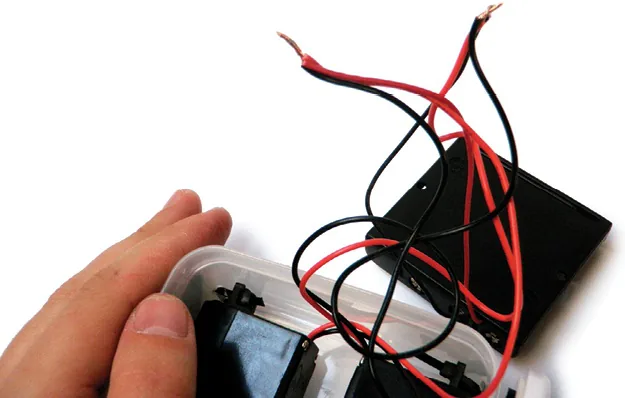
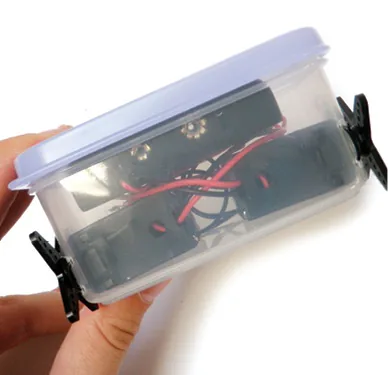
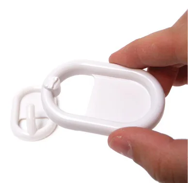
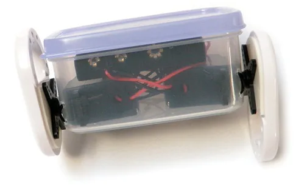
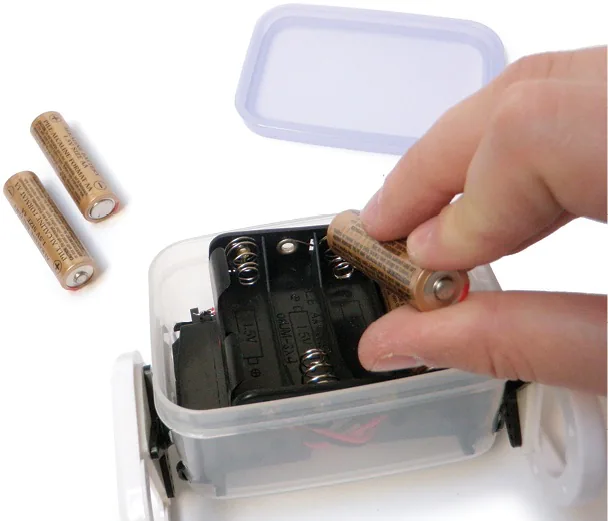

As you likely guessed from the name, Wobbler is a bot that moves around by wobbling back and forth. While it might seem a little clumsy initially, don’t let first impressions fool you. Wobbler is an enthusiastic and persistent little bot ready to take on the world.

The parts for this project are all easy to find, and the Wobbler should be straightforward to put together, even for less-experienced bot builders. More-experienced bot builders will have some fun modifying this one, as the design’s simplicity leaves a lot of room for expansion and experimentation.
Tools and Supplies
- Two continuous-rotation servo motors with the controllers removed
- Two self-adhesive oval coat hooks
- A 4 × AA battery holder
- Four AA batteries
- Small plastic container with lid
- Four zip ties
- Marker
- Wire stripper/cutting pliers
- Power drill
- A 1/8-inch drill bit
- A 3/8-inch or ½-inch drill bit
Wobbler Overview
You’ll build Wobbler in stages. First, you need to have premodified the continuous-rotation servo motors for direct drive (Chapter 4) or sourced one of the geared motor alternatives as outlined in Appendix A. Once that’s complete, you’ll mark and drill the plastic box to mount the motors, attach the motors inside the box, and wire up the circuit. Finally, you’ll mount Wobbler’s oval “wheels” on the outside of the box.
Constructing Wobbler

Step 1. Remove the servo horns from the motors. (A servo horn is the part attached to the motor shaft that spins.)
Step 2. Place the servos inside the plastic container such that they’re mirrored back to back. The servo shafts where the horns used to be should be located near the bottom of the plastic container and a little off-center to help Wobbler wobble.
Step 3. Mark the plastic container with a marker over the mounting screw holes and the motors’ shafts to indicate their positions.


Step 4. Drill holes in the plastic container where you made the marks.
For the smaller mounting holes, a 1/8-inch drill bit should be suitable. For the motor shaft, use either a 3/8-inch or ½-inch drill bit.
Step 5. Position the motors inside the plastic container and zip-tie them securely in place.

Step 6. Connect a red wire from one of the motors to a black wire from the other motor. Connect the paired wires with one of the wires from the battery holder. Next, connect together the remaining three loose wires to form another grouping. You can either solder these wires or use a mechanical connector.

Step 7. Place the battery holder inside the plastic container. Then close the plastic container and reattach the servo horns.


Step 8. Although this step isn’t entirely necessary, take the coat hooks and trim off the hook part with diagonal cutting pliers or a small saw. You’ll be left with self-adhesive oval wheels.
Step 9. Peel off the adhesive backing and stick the wheels to the servo horns such that each horn is completely hidden behind its wheel. Make sure to stick the wheels so they’re very off-center from the axis of rotation to give the bot a good wobble.

Step 10. Remove the lid, insert batteries into the battery holder, close the lid again, and let Wobbler go. The robot will keep going so long as the batteries are installed.

Experiment with setting the bot on different sides to observe all the ways it moves. Also try replacing the coat hook “wheels” with other objects to get unique results. Simply attach different objects to the servo horn with double-sided tape or zip ties.